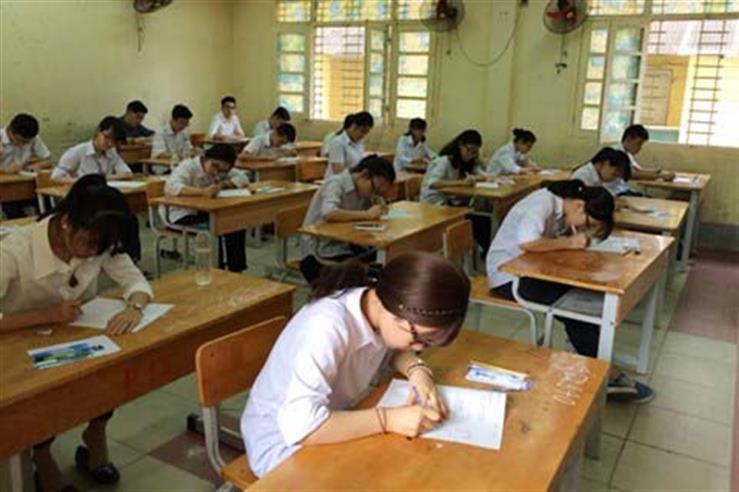

Thi trắc nghiệm môn Toán xác suất đỗ ăn may ngang trúng độc đắc

Viết bởi Administrator Thứ tư, 05 Tháng 10 2016 10:44
Hướng tới kỳ thi THPT quốc gia 2017, đặc biệt là khi môn Toán sẽ lần đầu tiên thi trắc nghiệm, Tiến sĩ chuyên ngành Phương pháp giảng dạy Toán Lê Thống Nhất cảnh báo, các thí sinh đừng mắc sai lầm chạy theo luyện thi khi chưa nắm chắc nguyên tắc thi trắc nghiệm.

- Nhiều người vẫn lo ngại về thi trắc nghiệm môn Toán, trong đó có đại diện Hội Toán học Việt Nam. Ý kiến của Tiến sĩ về vấn đề này như thế nào?
- Trong số những người lo ngại, có không ít người chưa hiểu về thi trắc nghiệm. Trước đây, vào năm 2007, tôi cũng là người chưa hiểu nên phản đối khá quyết liệt. Nhưng từ năm 2008, khi đưa ra sản phẩm thi Toán trên Internet (Violympic), tôi có nghiên cứu kỹ hơn và dần thay đổi quan điểm.
Tiến sĩ Lê Thống Nhất
Với một kỳ thi gần 1 triệu học sinh (thi THPT quốc gia) hoặc nhiều triệu học sinh (thi ViOlympic), trắc nghiệm khách quan là phù hợp. Qua theo dõi và xin ý kiến của nhiều phụ huynh, một trong những lý do mà mọi người ủng hộ ViOlympic là sự khách quan trong đánh giá, vừa nhanh, vừa tránh được tiêu cực.
Nếu hệ thống các trường ĐH kiểm soát tốt sự đánh giá trong quá trình đào tạo thì những học sinh “ăn may” trong kỳ thi đầu vào cũng sẽ bị loại nếu thực sự không có năng lực. Chúng ta nên nhớ, kỳ thi THPT quốc gia chỉ là kỳ thi đầu tiên chuyển tiếp từ phổ thông lên ĐH nên còn nhiều thời gian để rèn luyện các sinh viên có đầy đủ các yếu tố về tư duy, sáng tạo phát triển theo đúng mục tiêu đào tạo nhân tài.
- Lo ngại lớn nhất với thi trắc nghiệm là thí sinh cứ khoanh bừa cũng có thể đỗ tốt nghiệp và nếu các trường dùng kết quả kỳ thi này để xét tuyển ĐH thì sẽ có thí sinh đỗ ĐH theo kiểu “ăn may”?
- Chuyện đỗ theo kiểu “ăn may” hay đỗ trong một kỳ thi, dù thi tự luận vẫn sẽ xảy ra, có thể do sự sơ hở hoặc tiêu cực trong khâu coi thi, thậm chí cố tình tiêu cực ở khâu chấm thi.
Không ai dám đảm bảo môn Toán thi tự luận sẽ không có đỗ “oan”! Vậy đỗ “oan” ở kỳ thi trắc nghiệm môn Toán cũng có thể xảy ra đối với cả việc đỗ tốt nghiệp và xét vào học ĐH là chuyện bình thường. Để khắc phục, cần tính đến việc đề thi trắc nghiệm cho mỗi học sinh sẽ như thế nào để ngăn chặn tiêu cực hoặc đỗ do “may mắn”.
Theo Bộ GD-ĐT, đề thi không chỉ xáo trộn về thứ tự câu hỏi, thứ tự đáp án mà có cả sự khác nhau về đề thi. Xác suất để một học sinh do “may mắn” đạt được điểm cao khi thi trắc nghiệm môn Toán chỉ ngang với trúng xổ số độc đắc. Vừa qua, dư luận xôn xao về một học sinh được 10 điểm thi trắc nghiệm môn Lý khi điểm Toán bằng 0 cũng là một “giải độc đắc” cho kỳ thi 2016.
- Dư luận đặt khả năng bùng nổ lò luyện thi trắc nghiệm trước kỳ thi này. Vậy luyện thi có thực sự cần thiết với thí sinh không, thưa ông?
- Các bạn học sinh không nên quá tin vào quảng cáo. Nhiều bài giảng mang danh là luyện thi trắc nghiệm nhưng chỉ đưa ra một số mẹo chọn đáp án. Thậm chí, có người tưởng thi trắc nghiệm môn Toán là thi tính toán nhanh nên chủ yếu luyện việc sử dụng máy tính cầm tay.
Thật sai lầm khi nghĩ như vậy! Nếu các đáp án cho trước lại là các mệnh đề, các cách sắp thứ tự hay các hình vẽ thì các bạn bấm máy tính để chọn đáp án được không? Nếu cân đối các loại câu hỏi trong đề thi môn Toán thì kĩ năng tính nhanh chỉ chiếm tỷ lệ nào đó. Một nguyên tắc khi làm bài trắc nghiệm với đề thi chuẩn là phải nắm vững kiến thức cơ bản và có khả năng phán đoán tốt một cách có cơ sở thì bạn mới có thể đạt điểm cao trong kỳ thi này.
- Còn điều gì ông muốn chia sẻ thêm về phương thức thi năm 2017 của Bộ GD-ĐT?
- Thi trắc nghiệm trên máy tính thì dạng câu hỏi sẽ phong phú hơn. Với việc thi trắc nghiệm trên giấy bằng cách tô đáp án để máy chấm thì dễ bị hạn chế về các dạng câu hỏi. Hy vọng Bộ GD-ĐT sẽ nhanh chóng lo cơ sở hạ tầng về máy tính, đường truyền Internet để đến kỳ thi THPT quốc gia, học sinh có thể thi trên máy tính và được thi nhiều lần hơn trong năm.
Theo Vinh Hương, báo An ninh Thủ đô
itnbk.edu.vn- itnbk.edu.vn
- 07/04/2017 09:34 - Bộ GD&ĐT giải đáp nóng về đăng ký dự thi THPT quốc…
- 04/04/2017 09:54 - 4 điểm khác biệt thú vị giữa tiếng Anh Anh và tiến…
- 01/04/2017 09:30 - Cổng thông tin tuyển sinh của Bộ Giáo dục và Đào t…
- 30/03/2017 08:23 - Thủ tướng chỉ thị bảo đảm kỳ thi THPT, tuyển sinh …
- 09/03/2017 00:00 - Trường Chuyên Nguyễn Bỉnh Khiêm là chiếc nôi …
- itnbk.edu.vn
- 28/09/2016 00:00 - Phương án tổ chức kỳ thi trung học phổ thông Quốc …
- 01/08/2016 12:45 - Hướng dẫn thí sinh đăng ký xét tuyển trực tuyến Đạ…
- 29/07/2016 15:27 - Bộ giáo dục và đào tạo công báo điểm sàn Đại học n…
- 14/04/2016 07:45 - Cẩn trọng khi đăng ký dự thi để tránh rớt oan chế …
- 16/03/2016 16:09 - Chỉ tiêu tuyển sinh vào 21 trường quân đội năm 201…